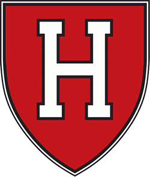

ECAC
Clarkson
Clarkson is 7-2-0 and 17th in the NPI. Across 500 simulated seasons its median NPI finish is 10th, with a 95% range of 3rd to 18th. ELO expects about 7 wins in the next 10.
Next 10 games
- Sat, Oct 24
 vs Providence83%
vs Providence83% - Fri, Oct 30

at Harvard60% - Sat, Oct 31at Dartmouth79%
- Fri, Nov 6
 at RPI90%
at RPI90% - Sat, Nov 7
 at Union70%
at Union70% - Fri, Nov 13vs Yale55%
- Sat, Nov 14
 vs Brown67%
vs Brown67% - Fri, Nov 20vs Princeton59%
- Sat, Nov 21
 vs Quinnipiac49%
vs Quinnipiac49% - Tue, Nov 24at Syracuse59%
Win chances from ELO; the dot is stronger the more lopsided the game.
Projected NPI finish
500 simulated seasons, remaining games decided by ELO win chances. Dashed line: median. Shaded: 95% range.